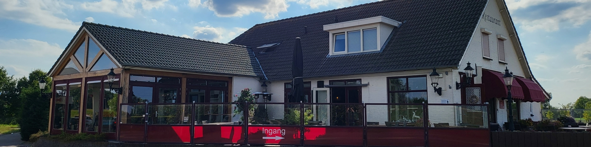
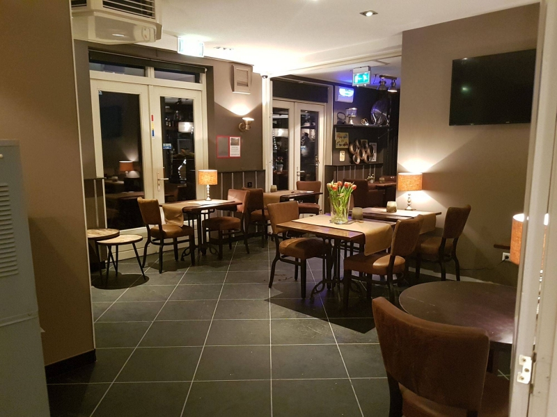
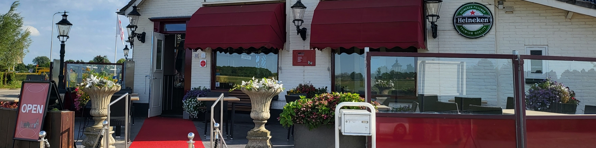

eten, drinken, genieten!
De Kletskop
Lekker dineren aan de Culemborgseweg in Asch. Ruime tafels, fijne stoelen en een uitgebreide kaart, van onze befaamde reuzensaté tot de kiloschnitzel.
Woensdag t/m zondag vanaf 17.00 uur, bestellen tot 20.30 uur
Bij ons zit je goed
Ons restaurant biedt ruime zitplaatsen op fijne stoelen. Vanaf 17.00 uur kunt u kiezen uit onze uitgebreide menukaart; de keuken sluit om 20.30 uur.
- Speciale wensen
- Ook veganistisch of vegetarisch eten kan. We houden graag rekening met een gluten- of lactosevrij dieet.
- Gratis parkeren
- Naast en tegenover het pand.
- Moeilijk ter been
- Er is een speciale ingang voor rolstoel en rollator. Zet de auto achter het restaurant en bel even, dan loopt er iemand naar binnen om de deur te openen.
- Met kinderen
- Kindvriendelijk, met een knus kinderhoekje achterin, kinderstoelen en een verschoonkussen.

Dinerkaart
Geldig vanaf 30 oktober 2026. Prijzen in euro's, prijswijzigingen voorbehouden.
- Broodplank met 3 verschillende dips7,00
- Huisgemaakte tomatensoep van verse tomaten, met basilicum en gehaktballetjes8,00
- Uiensoep uit de oven met kaas9,00
- Garnalen in de knoflook gebakken15,00
- Carpaccio met oude kaas, rucola en rode ui14,00
- Krokante kip met chilisaus10,00
- Gevulde champignons met gehakt en kaas12,00
- Onze befaamde Reuzensaté22,00
- Botermalse tournedos met champignons36,00
- Kipburger met kaas, bacon en aardappeltwister22,00
- Zalm op zijn huidje gebakken25,00
- Varkenshaasmedaillons met champignonroomsaus23,00
- Boerenkip met spek en stroganoffsaus23,00
- Vegetarisch gerecht quiche, burger of salade met gegrilde groenten24,00
Alle hoofdgerechten worden geserveerd met knapperige frites, fritessaus, verse salade en een preischoteltje.
- Varkensschnitzel23,00
- Kipschnitzel23,00
- Varkensschnitzel van 1 kilo alleen op reservering34,00
Doe jij mee aan de schnitzel challenge?
Erbij
- Sauzen zigeunersaus, pepersaus, champignonsaus, satésaus, knoflooksaus of boerensaus3,50
- Garnituren champignons, 2 gebakken eieren, bacon, uienringen of kaas2,50
- Gebakken aardappels3,00
Geserveerd met knapperige frites, fritessaus, verse salade en een preischoteltje.
Vers gedraaid softijs met slagroom
- Met boerenjongens en advocaat7,00
- Met aardbeiensaus en nootjes7,00
- Met caramelsaus en nootjes7,00
- Met chocoladesaus en witte chocoladekrullen7,00
Zoete lekkernijen
- Amerikaanse cheesecake7,00
- Onze welbekende hazelino7,00
Of geniet van een heerlijke speciale (ijs)koffie of thee.
Cocktails
- Pornstar Martini9,00
- Mojito9,00
- Espresso Martini9,00
Mocktails
- Pornstar Martini 0.08,00
- Mojito 0.08,00


Met een groep aan tafel
Wij hebben zitplaats voor maximaal 90 personen. Met 25 tot 40 personen kunt u besloten zitten in onze Huiskamer.
Een diner na een uitvaart is mogelijk op onze sluitingsdagen of in de middag. Heeft u een kleiner budget? Dan denken we graag mee over maatwerk.
Bel ons over uw gezelschapKerst bij De Kletskop
Op beide kerstdagen serveren wij een kerstmenu. De hele zaak staat in kerstsfeer, de tafels zijn gedekt en er is één zitting.
- Eerste en tweede kerstdag: vijfgangen keuzemenu, u kiest op de avond zelf.
- Kerstavond: gewoon onze normale kaart.
- Met een groep? Bel ons even op 0345 50 1200.
Dinerbonnen
Een avondje De Kletskop cadeau geven? Dinerbonnen zijn er vanaf 50 euro (kleinere bedragen zijn ook mogelijk) en zijn twee jaar geldig, behalve bij sponsoring. Restaurantcadeaukaarten, Wonderbox, Gift4you en dergelijke nemen wij niet meer in.
Openingstijden
| Maandag | gesloten |
|---|---|
| Dinsdag | gesloten |
| Woensdag | 17.00 – 21.30 |
| Donderdag | 17.00 – 21.30 |
| Vrijdag | 17.00 – 21.30 |
| Zaterdag | 17.00 – 21.30 |
| Zondag | 17.00 – 21.30 |
Bestellen van de dinerkaart kan tot 20.30 uur.
Gesloten van zondag 27 december 2026 t/m dinsdag 12 januari 2027.
Contact
Restaurant De KletskopCulemborgseweg 27
4115 RM Asch
0345 50 1200
info@dekletskop.nl
